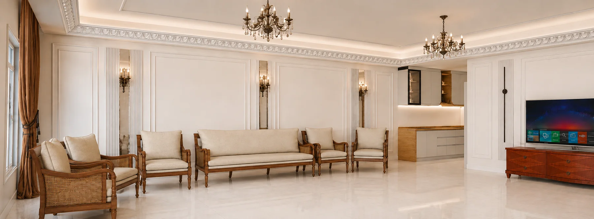

INTERIOR DESIGN & VISUALIZATION
از ایده،
تا تصویری قابل ساخت.
طراحی داخلی، مدلسازی سهبعدی و توسعه جزئیات اجرایی۱۲مجموعه طراحی۸۴تصویر منتخب
CURATED CONCEPTS
پروژههای استودیو
نماهای مشابه هر کانسپت در یک مجموعه قرار گرفتهاند. روی کارتها کلیک کنید تا روند کامل طراحی و زوایای مختلف پروژه را ببینید.
DESIGN PROCESSطراحی برای اجرا،
طراحی برای اجرا،
نه فقط برای تصویر.
- 01شناخت فضا و نیازهای پروژه
- 02کانسپت، پلان و انتخاب متریال
- 03مدلسازی و رندر واقعگرایانه
- 04جزئیات و نقشههای اجرایی